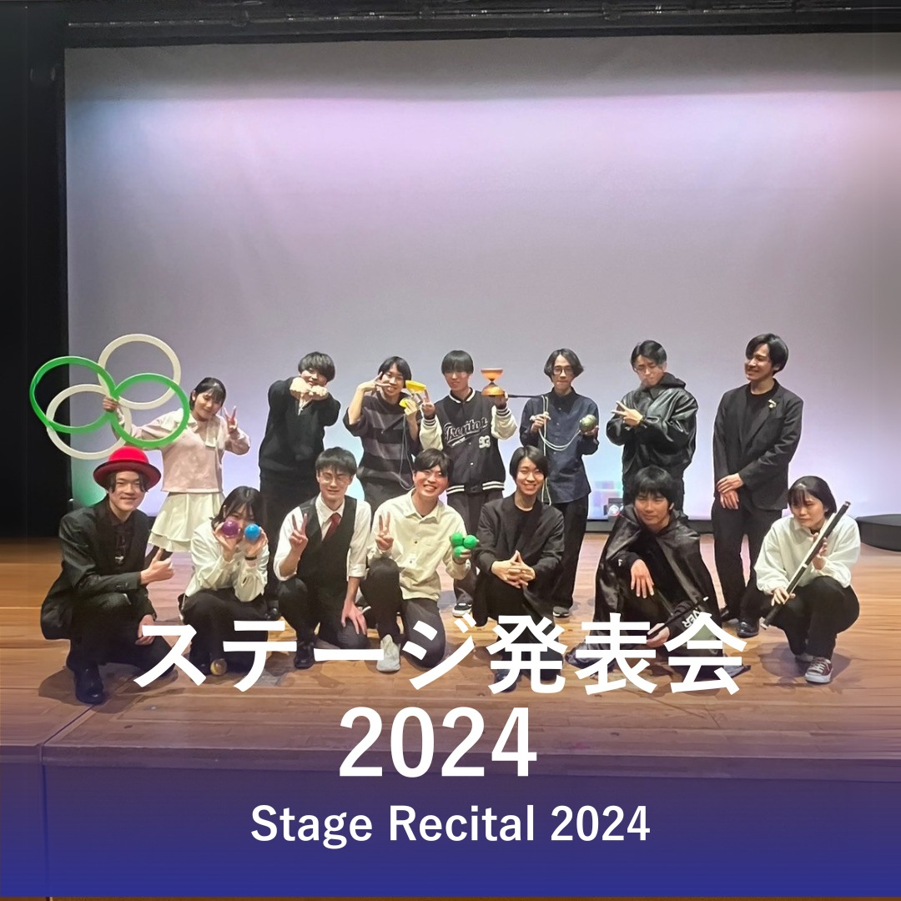
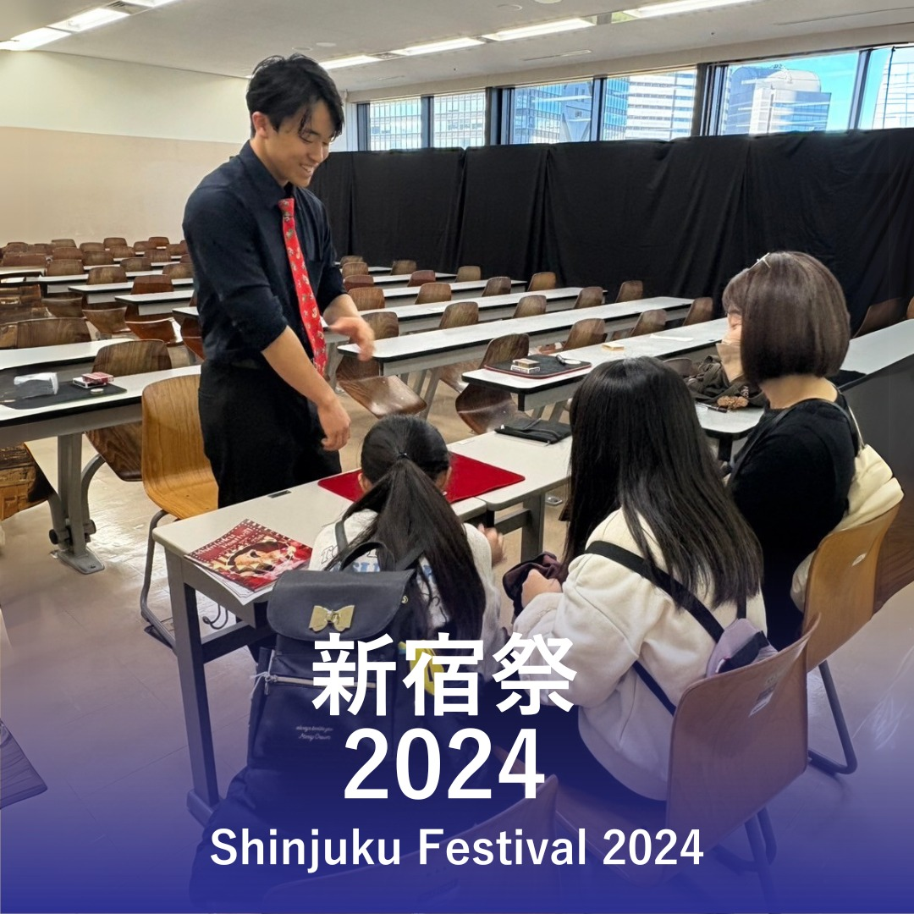
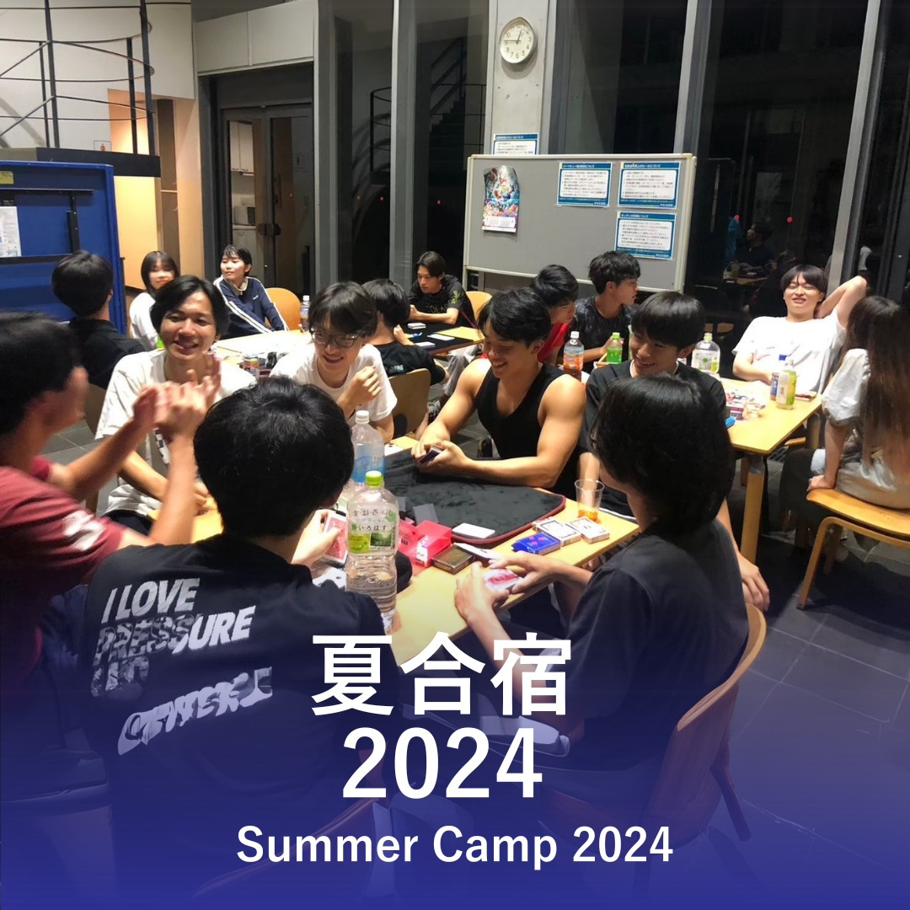
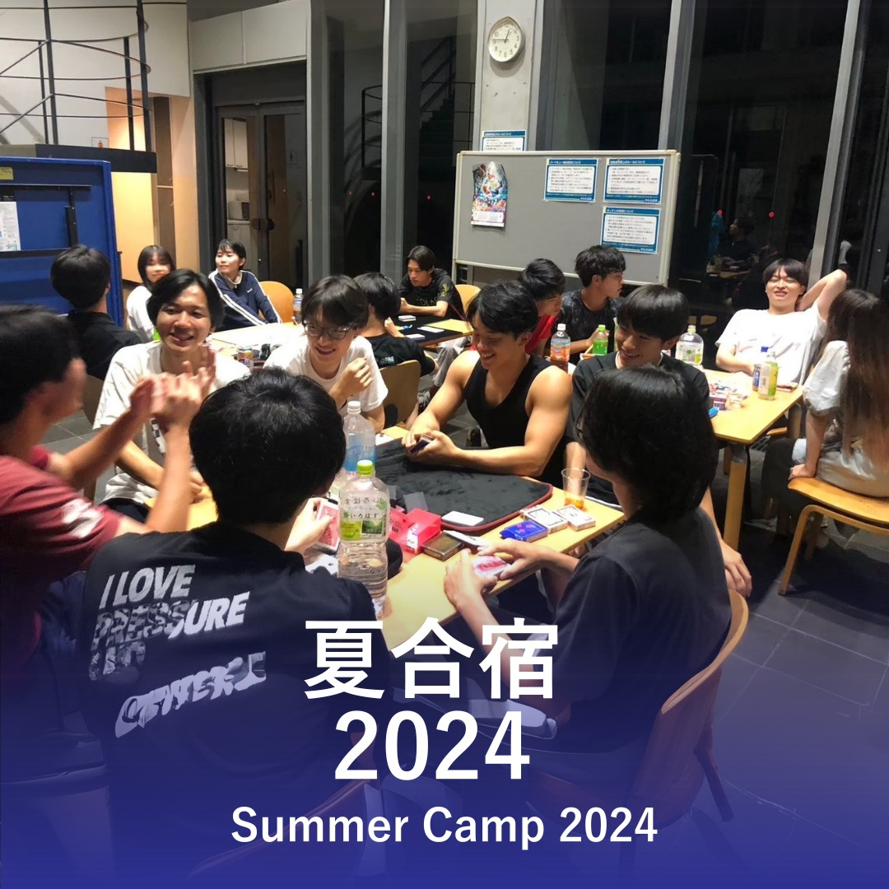
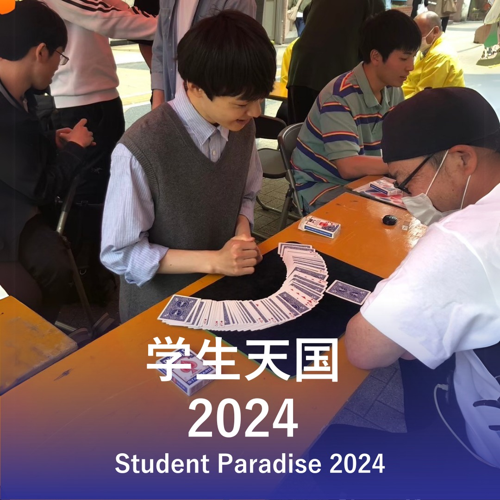
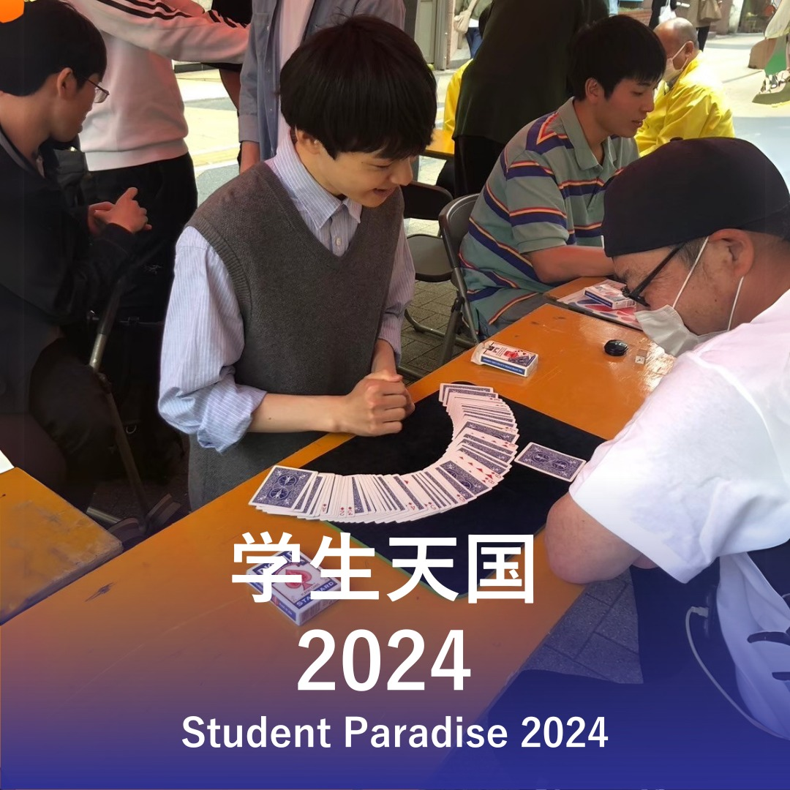
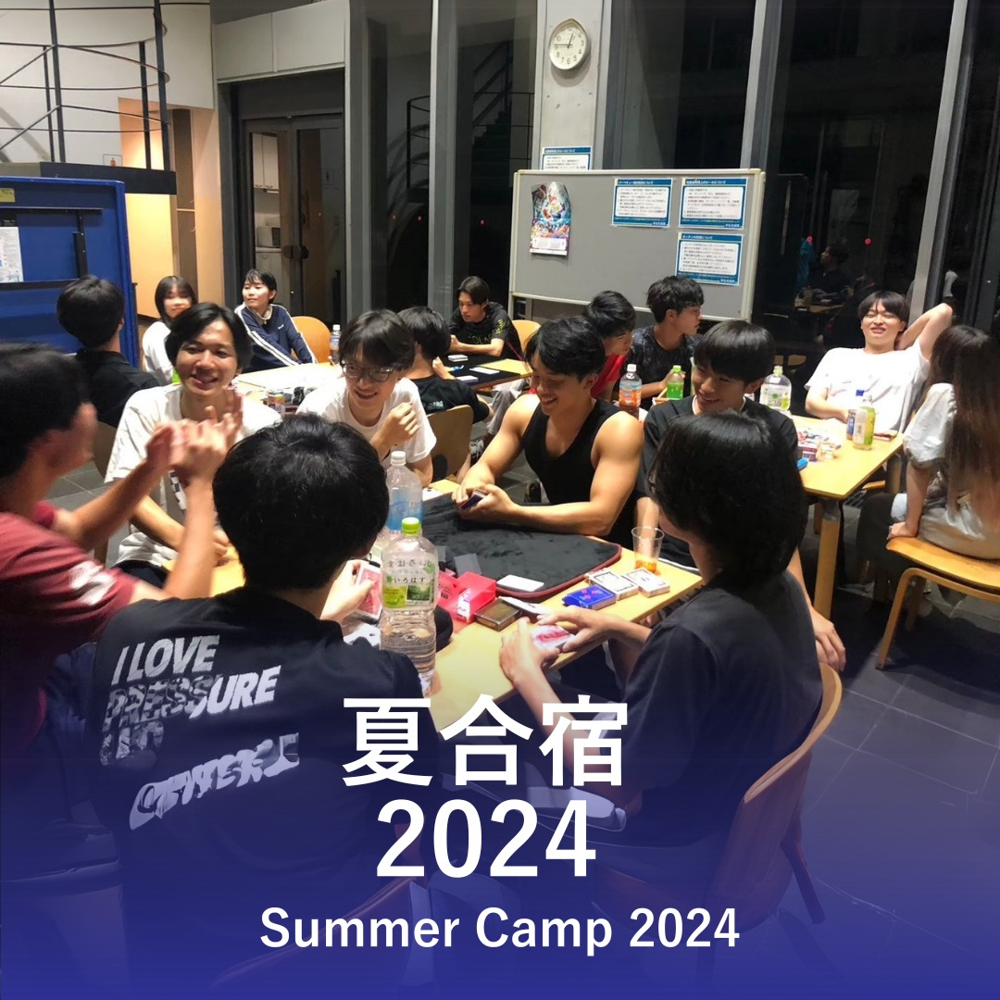
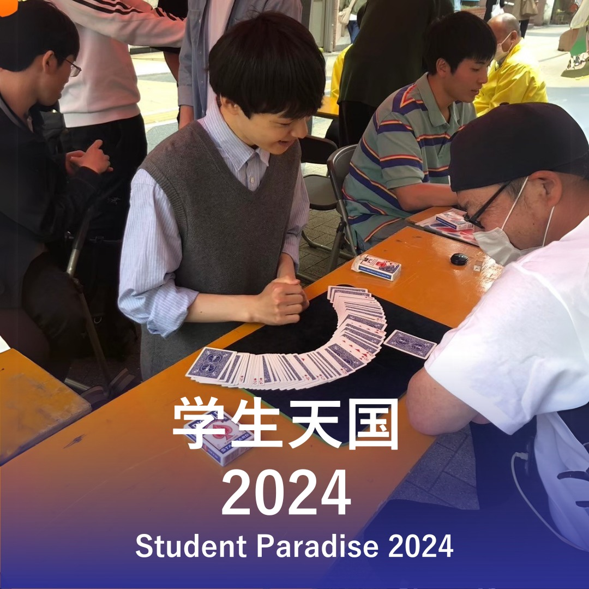

活動紹介
活動内容
マジシャンズ・ソサエティは、マジックとジャグリングを中心に活動している部活です。コインマジックやカードマジック、ヨーヨー、ボールなど幅広いパフォーマンスを練習し、学園祭やサロンステージでの発表をはじめ、地域のお祭りや保育園などでのボランティアマジック公演も行っています。基本的には好きな時に参加できる自由な雰囲気で、初心者も大歓迎です。練習では基礎的な技を短時間で学びながら、それぞれのペースでステージに向けて技術を磨いています。外部のプロマジシャンから直接指導を受けられる機会もあり、楽しみながら成長できる環境が整っています。
活動日時
活動日は、前期と後期が始まる前に部員全員にアンケートを取り、参加しやすい曜日を週4日選んで決定しています。最新の活動スケジュールは、公式SNSで発信しています。
活動時間
17:30 〜 21:30
参加スタイル
- 途中参加・途中退出もOK。授業や勉強、アルバイトなど、それぞれの都合に合わせて両立しやすくなっています。
- 週4日すべてに参加する必要はなく、都合の良い日に気軽に参加できます。
活動場所
15号館101
新入生の方へ
見学や体験も大歓迎です。分からないことがあれば、いつでも各種公式SNSのDMでご相談ください。
最新情報はSNSでチェック！
写真紹介
活動例です


 

 


